Atatürk’ü Çekemiyorlar!
Türkiye, bir Atatürk filmine henüz hazır değil. Mustafa Kemal’in tarihi şahsiyetinin kısa vadede bir filme konu olması mümkün görünmüyor. Elli yılı aşkın bir zamandır gündeme gelen projelerin hiçbiri hayata geçirilemedi çünkü.
Türkiye’de dönem dönem esen bir “Atatürk filmi çekme” furyası var. Ancak furya kelimesi burada temennilere ve sonuçsuz girişimlere denk düşüyor. Yönetmenler belli aralıklarla bir Atatürk filmi çekme özleminden söz etseler de şimdiye değin, “eli yüzü düzgün”, Türkiye’yi ve Atatürk’ü uluslararası düzlemde temsil edecek bir Atatürk filmi ortaya çıkmadı. Siz şu satırları okurken bile bir yönetmen ya da oyuncu, projeleri arasında bir de Atatürk filmi bulunduğunu açıklıyor olabilir.
Bu metin size yeni bir Atatürk filminin müjdesini veremeyecek belki; ama ilk günden bugüne, 50 yılı aşkın bir sürede ‘Atatürk filmlerinin çekilememe hikayesi’ni öğrenme imkânı sunacak. Atatürk filmi niye çekilemiyor? Şimdiye kadarki girişimler neden başarısız oldu? Atatürk’ü oynaması için hangi Hollywood starları Türkiye’yi ziyaret etti? Atatürk’ü Koruma Kanunu filmi engeller mi? Ve Türkiye bir Atatürk filmi için ne kadar beklemek zorunda?
İlk büyük Atatürk filmi girişiminin tarihi 1951. Filmin aktör adayı, Amerikalı Douglas Fairbanks Jr. Türkiye’de devlet töreniyle karşılanır ve rol için hazır olduğunu ifade eder. Ancak ABD’ye döndüğünde ‘senaryo’ engeline takılır. Yönetmen Cecil B. DeMille, Atatürk filmi yapma isteğiyle Londra’ya gider ve Churchill’den “Memnuniyetle destek oluruz” sözü alır. Fakat Türkiye’den izin çıkmaz. Cecil, 1957’de ölünce Celal Bayar onunla birlikte hareket eden Adil Özkaptan’ı yeni proje için makamına çağırır.
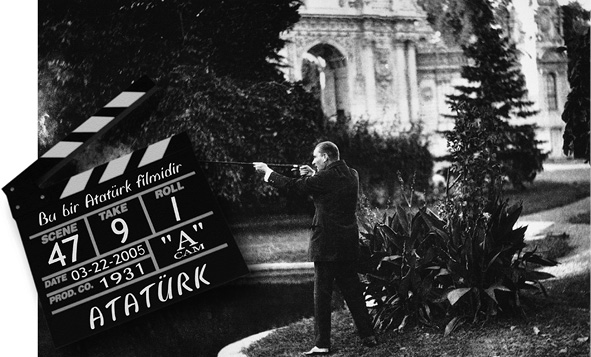
1962’de, “Kral ve Ben” filmiyle sükse yapan Yul Brynner’ın rol alacağı ikinci proje gündeme gelir. Türkiye’ye davet edilen Brynner, dönemin cumhurbaşkanı Cemal Gürsel tarafından kabul edilir. Ancak ‘senaryo’ anlaşmazlığı burada da nükseder. Sonraki teklifin “Yunanlı Zorba” filmindeki rolüyle göz dolduran Anthony Quinn’e gittiği söylense de Quinn’den konuyla ilgili bir açıklama yansımaz kamuoyuna.
Sonuçsuz kalan film girişimleri
Atatürk filmi projeleri hız kesmez. Yeni aday Kirk Douglas’tır. Eşiyle birlikte Türkiye’ye gelen aktör de diğerleri gibi rolün kendisi için ‘onur verici’ olduğunu ifade edecektir. Burçak Evren’in deyimiyle ‘Anıtkabir ziyaretini’ bile ihmal etmeyen ünlü aktörler her seferinde evlerine dönmek zorunda kalır. Charlton Heston’un adının geçmeye başladığı günlerde sinemacılar, Atatürk filminin çekilemeyeceğine iyiden iyiye inanmaya başlamıştır.
Burçak Evren, Atatürk’ü oynaması için teklif götürülen isimler listesinde John Wayne, Marlon Brondo ve Burt Lancaster’ın da olduğunu söylüyor. İKSV İstanbul Film Festivali Yönetmeni Hülya Uçansu ise ünlü İngiliz oyuncu Lawrence Olivier’in oğlu T.Oliver ile onun Türk eşi Zelfa Olivier’in sonuçsuz kalan girişimlerinden söz ediyor.
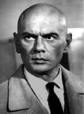 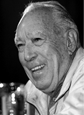 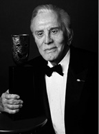
Yul Brynner, Anthony Quinn, Kirk Douglas, Antonio Banderas
En son teklif ünlü aktör Malagalı Antonio Banderas’a götürülse de filmin akıbeti diğerlerinden farklı olmaz. ‘İyi senaryo, iyi ekip’ engeli burada da ortaya çıkar, bir de Ermeni lobisinden geldiği söylenen bir ‘tehdit’ dolaşır kulaktan kulağa. Ünlü futbolcuların menajeri Bayram Tutumlu, Alem Dergisi’nde yayımlanan söyleşide, üye oldukları bir vakfın partisinde Banderas’la Atatürk filmi üzerine sohbet etme fırsatı bulduğunu; oyuncunun ‘tehdit’ söylentisini doğruladığını aktarıyor. Ancak, bir farkla; tehdit Ermenilerden değil Türklerden gelmiştir. Antonio Banderas’a Atatürk rolünü layık görmeyenler oyuncuyu ‘tehdit’ etmişlerdir. Kara kaşlı, kömür gözlü bir aktörün “saçları altın sarısı, gözleri deniz mavisi” Atatürk’ü oynaması istenmemiştir.
Atilla Dorsay’a göre Atatürk idealize edildiği için onun yerine kimseleri yakıştıramıyoruz. Aslında seçilecek oyuncunun tamamen Atatürk’e benzemesi beklenemez. Sözgelimi, Colin Farrel, dalgalı sarı saçlarıyla Büyük İskender’i oynayabiliyorsa, esmer biri niçin Atatürk’ü oynayamasın? Cumhuriyet, Metamarfoz gibi filmlerde rol alan oyunculara ‘plastik surat’ benzetmesi, Atatürk’ü kimselere yakıştıramamanın yönetmenler ve oyuncular üzerinde oluşturduğu baskının eseri. Oyuncudan, Atatürk’ü yorumlaması değil her şeyiyle tanımlanmış, yorumlanmış; hatta oynanmış bir Atatürk’ü oynaması bekleniyor. Bu sinema sanatından çok heykel sanatını andırıyor; duygusuz ve hissiz...
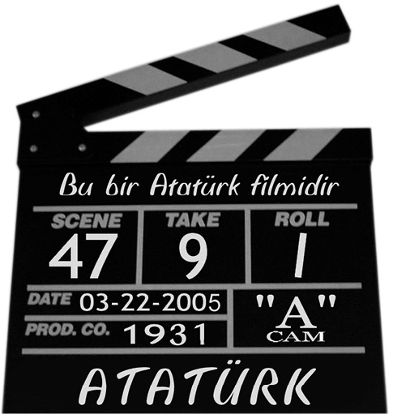
1969’da Tony Curtis ve Charles Bronson’un başrolü paylaştıkları “Dubious Patriots” (Paralı Askerler) adlı macera filmi, Türk Kurtuluş Savaşı’na Türklerin yanında katılan iki maceraperestin başından geçenleri anlatıyor. Filmin senaryosu, Türk makamları tarafından iyice incelenip onaylanır. Türkiye ve Türkler aleyhine tek satır olmamasına dikkat edilir. Her şey yolunda gidiyordur; ancak bir anda ortalık karışır ve filmin son sahnesi krize yol açar.
Final sahnesinde Atatürk iki maceraperesti kabul edecek ve onları onurlandıracaktır. 10 saniyelik Atatürk rolü için bir jön yerine bir karakter oyuncusu tercih edilmiştir. Aslında Türkiye’nin lehine olan film, bir anda skandala dönüşür. Medya ve devlet yetkilileri olayı kınar, filmin Türk oyuncuları hadiseyi protesto eder. Sorun, son sahnedeki iki kahramanın Atatürk’ün huzuruna değil de, başka bir Türk komutanın karşısına çıkartılmasıyla halledilir.
Atatürk ağlar mı?
Atatürk, sadece cephede, ordusunun başında, devrim kararları verirken ya da halkı selamlarken gösterildiği sürece bir Atatürk filminden söz etmek mümkün olmayacak gibi görünüyor. İnkılap tarihi derslerinde, Atatürk’ün Anadolu’da rastladığı bir çocukla konuşmasını anlatan ya da manevi kızı Ülkü’yle çekilmiş fotoğrafına yer veren sayfaları daha büyük bir ilgiyle incelediğimizi kim inkar edebilir? Atatürk’ü resmi söylemin soğukluğundan kurtarıp, insanî yönleriyle ele almak ise her babayiğidin harcı değil. Atatürk idealize edilmiş bir lider ve elbette hayatında ‘dokunulamayan’ yanlar var.
‘Atatürk filmi neden çekilemiyor’ sorusundan, ‘Atatürk filmi neden çekilemez’e doğru giden bir soruşturmaya cevap arayan yönetmenler, sinema eleştirmenleri ve yazarlar bir ağızdan soruyor: Nasıl bir Atatürk? Devletçi Atatürk mü, liberal Atatürk mü, resmi Atatürk mü, sivil Atatürk mü? Bütün kapılar aynı yere açılıyor; ‘’Atatürk’ü insanî yönleriyle ele almayan bir film ‘propaganda sineması’ndan öteye gidemez.” Propaganda sinemasının çoktan demode olduğunu hatırlarsak ‘özgür’ bir Atatürk filmi için yarım asır beklememiz gerektiğini belirten Atıf Yılmaz’a hak vermemiz gerekir.
Filmin önündeki en büyük engel
Bir film, Atatürk’ü anlatıyor bile olsa, kimsenin izlemek istemeyeceği kadar kötü olabilir mi? Nihal Bengisu Karaca, “Kusurları ve insanî sınırlılıkları ile işlenen karakterlerin sinemada çok daha etkili olduğu bir gerçek. Zira seyirci ancak eksiklikleri, kusurları ve acıları olan karakterle özdeşleşir.” diyor. Ancak, Atatürk filminin önündeki en büyük engel de işte burada ortaya çıkıyor; ideallerimizde yaşattığımız Atatürk mü, yoksa kusurları ve erdemleriyle insan Atatürk mü?
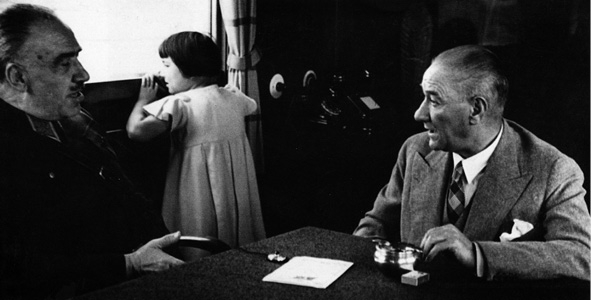
Atatürk’ü çekmemenin en büyük nedeni özgür ve özgün bir senaryo yazılamaması.
Karaca’nın muhtemel bir Atatürk filminden sonra yaşanacaklara ilişkin öngörüsü ise tablonun vahametini gözler önüne seriyor: “Bravehart’ın görkemli William Wallace’ı gibi ‘mükemmele yakın’ bir Atatürk portresi bile çizmeye kalksanız, vay efendim Ata attan düşer mi, o sahnede niye öyle yerlerde sürünüyordu. Ata hiç ağlar mı, Ata’nın fikirlerini taşımayan, ona karşı olan kesimler, neden ‘iyi’ gösteriliyordu diye ortalığı velveleye verecek olanlar çıkar; durum o kadar vahim.”
Mesele, ‘Türkiye’de bütün kesimlerin ittifakla benimseyeceği bir Atatürk filmi senaryosu yazılabilir mi?’ sorusunda düğümleniyor. Cevap ortada; böyle bir senaryo yazılabilseydi, bir Atatürk filmimiz olurdu. Senaryo girişimleri olmuş elbette; ancak her seferinde türlü gerekçelerle yarım kalmış. Halit Refiğ, 1990 yılında yazdığı ‘Gazi ile Latife’ adlı senaryosunun kitaplaştırıldığı halde filme aktarılmamasını finans sıkıntısına bağlıyor; ancak senaryoların rafa kaldırılma nedeni çoğunlukla, filmin gösteriminden sonra nereden geleceği bile belli olmayan eleştirilere muhatap olma kaygısı...
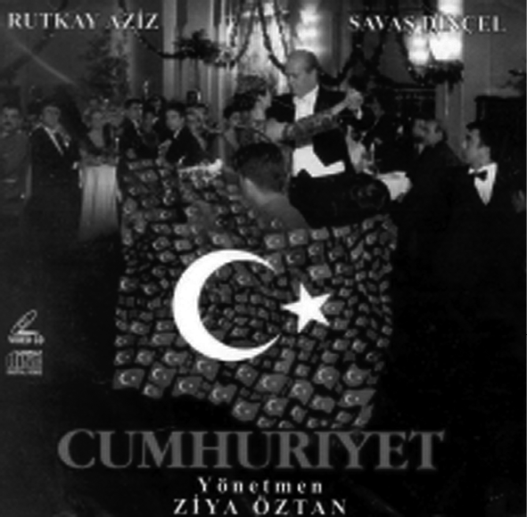
Ziya Öztan’ın çektiği Cumhuriyet filmi resmi tarihin
teyidinden ibaretti.
Atatürk’ü oynaması için Türkiye’ye davet edilen, devlet töreniyle karşılanan yabancı oyuncuların her seferinde geri gönderilmesinin altında da aynı neden yatıyor; uygun bir senaryo bulamama... Atatürk’ün zaafları ve erdemleriyle bir bütün olarak ele alınmasında hemfikir olanlar, ‘Senaryo kimin elinden çıkmalı?’ sorusunda aynı görüş birliğine varamıyor. İstanbul Film Festivali yönetmeni Hülya Uçansu “Böyle bir filmin prodüksiyonu bütçe ve senaryo açısından Türkiye’de kotarılamaz.” derken, Toktamış Ateş, yabancıların elinden çıkmış bir Atatürk filminin ruhuna hitap etmeyeceğini söylüyor.
Atatürk’ü oynayacak aktörün özelliklerinin senaryo üzerinde şekillenmesi de ayrı bir tartışma konusu. Sinema eleştirmeni Nedim Hazar, Atatürk’ü oynamanın önünde ‘onu başarıyla canlandırma’ kaygısını da aşan sorunlar bulunduğunu düşünüyor. “Bize anlatılan Atatürk, gözleri çakmak çakmak, kartal bakışlı, heybetli bir adam. Oysa gerçekte 1,64 boyunda, ufak yapılı bir insan. Şimdi sinemada Atatürk’ü ufak tefek birine oynatsanız, yer yerinden oynar. İdealize edildiği şekilde boylu boslu birine oynatsanız, gerçeğe aykırı olur.”
Önemli sorulardan biri de sivil Atatürk’ü ne kadar tanıdığımız. ‘Kargaları kovalayan küçük Mustafa’ resmi var zihinlerimizde. Fakat, eşiyle, akrabalarıyla ilişkisi nasıldı, bilinmiyor. Bir başka sinema eleştirmeni Atilla Dorsay, Atatürk’ün Türk müziği dinleyip dinlemediğinin bile hâlâ tartışıldığını söylüyor. Dorsay’a göre Atatürk, hem içki masasında hem cephede gösterilebilmeli.
Nasıl bir Atatürk filmi?
Her ne kadar, görüşler bir Atatürk filmi çekmenin neredeyse imkânsız olduğu yönünde birleşse de, muhtemel bir filmin nasıl olması gerektiğini tartışmak kimseye zarar getirmez. Halit Refiğ’in dediği gibi önce ‘Atatürk filmi nedir?’ sorusuna açıklık getirmeli. Zorluklarına rağmen Atatürk’ün hayatının bütünüyle ele alınması gerektiğine inananlar var; mesela Ahmet Mekin’in Atatürk rolünü oynamak istememesinin altında, çocukluğundan başlayıp askeri okullardan cephe savaşlarına, oradan devrimlere uzanan bir hayatı yansıtmanın gerekliliği ve bunu başarmanın zorluğuna duyduğu inanç yatıyor.
Giovanni Scognamillo da Çanakkale ve İstiklâl Savaşı’nı yeniden canlandırmanın imkânsızlığına değiniyor. Alternatif film önerileri ise, Atatürk filmini biraz daha yakın ve biraz daha ‘olabilir’ kılıyor. Atatürk’ün hayatını bütün yönleriyle anlatan bir film yapmanın mümkün olmadığını söyleyen Halit Refiğ’in önerisi, Atatürk’ün değişik dönemlerini değişik yaklaşımlarla çekmek.
Koruma kanunu filmi engeller mi?
Ziya Öztan’ın Cumhuriyet filmini, ‘bir devri resimleyen müsamere’ye benzeten Atilla Dorsay da Atatürk’ün hayatında ‘bir nokta’ya yoğunlaşmak gerektiğine inananlardan. Etyen Mahçupyan ise, “Her şeye rağmen bir Atatürk filmi çekilecekse Atatürk’ün yaşamının herhangi bir noktasında on gün ele alınabilir, hatta sıradan bir günü bile filmleştirilebilir” diyor. Mahçupyan’a göre böyle bir film çok iddialı olmaz; ama çok iyi olabilir.
1984 yılında bir grup Japon turist için buharlı tren gezisi yapmak üzere demiryolları idaresinden alınan izinde, “Buharlı trenin penceresinden, Atatürk İlke ve Devrimleri’ne zarar verecek resim çekmek yasaktır” ibaresi dikkat çeker. Bu yaşanmış küçük olay, Atatürk filminin çekilmesindeki muhtemel zorlukların büyüklüğüne işaret ediyor. Üstelik böyle bir filmin Atatürk’ü Koruma Kanunu gibi doğrudan yasal muhatabı var. Kanunun yürürlüğe girme tarihi ile ilk Atatürk filminin gündeme gelme tarihi aynı: 1951.
Toktamış Ateş’e göre “İşgüzar” bir savcının elinden her türlü şey gelebilir; ama bu kanun Atatürk filminin çekilmesini engellemez. Hülya Uçansu da aynı kanaatte; fakat koruma kanunuyla ilgili farklı görüşler de var. Halit Refiğ, kanunu Atatürk filminin çekilmesini zorlaştıran sebepler arasında görüyor. Atıf Yılmaz’ın açıklaması daha keskin: “Kanunla korunan bir insanın hayatını filme aktarmak ona methiye dizmekten öteye gidemez, ki böyle bir filmi de kimse izlemez.” Givonni Scognamillo, dokunulmazlığın eskisi kadar sert uygulanmamakla birlikte geçmişte engel teşkil etmiş olabileceğini dile getiriyor.
“Atatürk filminde devletin rolü ne olmalı?” sorusunun cevabı “İçinde olsun ama müdahil olmasın” şeklinde tezahür ediyor. Soru beraberinde prodüksiyonun yerliliğini tartışmaya açıyor. Scognamillo’ya göre özel bir yapım şirketi, bunun altından kalkamaz. “Mesele, devletin tüm imkanlarını kullanarak; ama bir ‘devlet filmi’ yapmaksızın film çekebilmekte.”
‘İllâ ki Türk yönetmen çekmeli’ diyor Givonni Bey. Etyen Mahçupyan’a göre, “yerli mi, yabancı mı” tartışmasının aşıldığı bir dönemde, işbirliği kurulmadan böyle bir film çekilemez. Türkiye, projenin içinde olmalı; fakat senaryoda yabancılarla işbirliği gerekiyor. Nedim Hazar ve Hülya Uçansu da “Gölge etmesin başka ihsan istemez” diyenlerden.
Atatürk’ün hikâyesiyle ilgilenen son isim, Gılgameş filminin yapımcısı Beni Atoori. Salvador Dali ve Mata Hari’nin hayatlarını filme aktarmaya hazırlanan yapımcının bir sonraki projesi ‘Ata’nın hayatı’. Atoori, başrolde kimi oynatır, senaryoyu kime yazdırır, bilemeyiz; ancak, Atatürk filmleriyle ilgili Yeşilçam ve Hollywood efsanelerinin alıp yürüdüğü bir ortamda, ‘Atatürk’ün filmini çekeceğim’ demeçlerinden birinin de ona ait olması sorun olmaz. Atoori, belki çeker, belki çekemez; ama filmin çekimiyle ilgili ‘zaman gösterecek’ gibi bir ifadesi var ki, söz konusu Atatürk filmi olunca bu zamanın ne kadar uzayacağı hakkında bir fikir yürütmek imkânsızlaşıyor. Kimbilir belki de Atıf Yılmaz haklı çıkar; bir 50 yıl daha Atatürk filmi bekleriz.
***
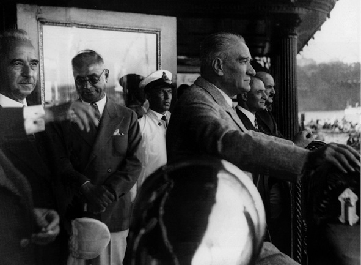
Kurtuluş Savaşı yıllarında çekilen “Zafer Yollarında” adlı belge filmi 1934’te izleyen Atatürk, kendisinin yer aldığı bölümlerde hareketli görüntünün olmamasından dolayı filmin tamamlanamadığını öğrenince tepki gösterir; “Ben hayattayım...”
Atatürk: Gerekirse Bir Artist Gibi Oynarım
Savaş ortamında bile sinemanın önemine inanan Atatürk, Cumhuriyet’in kurulmasıyla birlikte özellikle Kurtuluş Savaşı üzerine bazı filmler yapılmasını veya yapılanların geliştirilmesini ister. Bu, Kurtuluş Savaşı yıllarında Fuat Uzkınay’ın çektiği “Zafer Yollarında” adlı belge filmin yeniden yorumlanmasında açıkça görülüyor. Konuyu, Mimar Sinan Üniversitesi’nde sinema üzerine doktora yapan Alper Çağlayan’ın ‘Türkiye’de Sinema Politikası’ çalışmasından takip edelim. Söz konusu filmi 1934’te izleyen Atatürk, kendisinin yer aldığı bölümlerde hareketli görüntünün olmamasından dolayı filmin tamamlanamadığını öğrenince tepkisini şöyle dile getirir: “Ben hayattayım... Milli mücadeleye ait bütün evrakım, kılıcım, çizmem halihazırda mevcut olduğuna göre çağırdığınız anda bana düşen vazife ve görevi yapmadım mı? Böyle bir teklif karşısında kalsam memnuniyetle kabul eder, bir artist gibi filmde rol alır, hatıraları canlandırırdım. Bu, milli bir vazifedir.” Araştırmanın bir başka bulgusu da 1948’de sinemada Muhsin Ertuğrul tekelinin kırılmasıyla birlikte başlayan Kurtuluş Savaşı filmlerinin ‘moda’ya dönüşmesi. Bu akım, 1968’de Genelkurmay Başkanlığı’nın top, tüfek, figüran asker gibi her türlü askeri yardımı yasaklamasına kadar sürer.
***
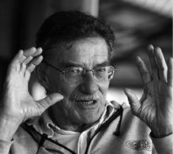 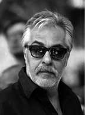 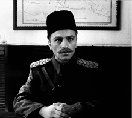
Ahmet Mekin, Rutkay Aziz, Serdar Orçin
Ahmet Mekin, İyi Bir Atatürk Filmi Beklerken Yaşlandı
Atatürk rolüne en çok yakıştırılan oyuncu, uzun zamandır ayrı kaldığı beyaz cama bir televizyon dizisiyle dönen Ahmet Mekin. Karakter oyuncusu Mekin, “Eskiden çok teklif geliyordu. 1960’lı, 70’li yıllarda kültür bakanları bizzat arayıp Atatürk’ü oynamamı istiyorlardı. Ancak ben, böyle bir role hiçbir zaman sıcak bakmadım.” diyor. Mekin’in Atatürk rolünü ısrarla geri çevirmesinin tek sebebi; Türkiye’de bir Atatürk filmi çekecek alt yapının olmayışı. “Atatürk sıradan bir insan değil ki.” diyor oyuncu; “Çocukluğundan başlayacaksınız, askeri okullar, İttihat Terakki, Çanakkale Savaşı, Kurtuluş Savaşı, devrimler... Bir ayda senaryo yazıp, bir ayda çekmekle olmaz bu iş.” Sanatçı, “Sen bunları niye düşünüyorsun, oynayacağın role bak” diyenleri, “Ben kendimi filmin bütününden sorumlu hissederim.” diye cevaplamış. “Atatürk’ü oynasaydım sinemayı tamamıyla bırakırdım.” diyen Ahmet Mekin, kimi yönetmenlerin ve yazarların gözünde Atatürk’ü en iyi canlandıracak oyuncu hâlâ; ancak zamanın etkilerini göz ardı etmeden. Atilla Dorsay, ‘çok özel bir yüzü var’ dediği Mekin’in bu rol için artık yaşlandığını düşünüyor. Etyen Mahçupyan ve Toktamış Ateş de ‘Ahmet Mekin vardı, ama..’ diyenlerden. Ateş’in favorisi Haluk Bilginer ve Kenan Işık. Dorsay ise ‘Kurtuluş’ filminde Atatürk’ü oynayan Rutkay Aziz’i başarılı bulmamış. Atatürk’ü canlandıran ender isimlerden Mahir Günşiray, Rutkay Aziz ve Serdar Orçin’in oyunculuklarına gelince, Ahmet Tulgar, Milliyet gazetesindeki değerlendirmesinde, bu oyuncuların çehresinin bir tuvale dönüştürüldüğünden ve makyajla bir Atatürk resmi yapıldığından söz ediyor. Oysa izleyici, perdede ağır bir plastik müdahale yerine, etkili bir ifade görmek istiyor. Atatürk’ü insanî yönleriyle anlatan bir filmin şimdiye kadar çekilmediğini söyleyen Atıf Yılmaz ise Rutkay Aziz ve Mahir Günşiray’ın oyunculuklarını değerlendirmeyi gereksiz buluyor.
***
Burçak Evren - Sinema eleştirmeni:
Ne yapıyoruz, ne yaptırıyoruz
Atatürk ile ilgili bir filmin bugüne dek yapılmamasının tek sebebi, yapılmak istenmemesidir. Niçin yapılmak istenmez? Birinci neden, eğer yapılırsa tabu bozulacak paranoyası. Hele hele bunu yabancılar yapacaksa… İkincisi, Atatürk’ü bir filme sığdırıp anlatamama korkusu. Üçüncüsü ise ihmalkarlık, boşvermişliktir. Kimilerin böyle bir filmi yapma ve yaptırmama gereksinimini duymamasıdır. Filmi biz kendi sinemamızın olanaklarıyla yaparsak bir propaganda filmi ortaya çıkar, bir başkasına emanet edip yaptırırsak da gerçek dışı ya da gereğinden fazla gerçekçi olur korkusu da Atatürk filminin çekilmesini neredeyse imkansız kılıyor. Ayrıca ‘Biz yaparsak biz izleriz, bir başkası yaparsa tüm dünya izler’in beraberinde getirdiği çelişkiler... Sonuçta bizim yapacağımızı dünya beğenmeyecek, bir başkasının yapacağını da biz beğenmeyeceğiz. O zaman böyle bir film niye yapılsın ki?
Atıf Yılmaz - Yönetmen:
Film, 50 yıl sonra çekilebilir
Neden bir Atatürk filmi çekilemediği sorusunun cevabı çok basit bana göre. Atatürk’ün ölümünün üzerinden fazla bir zaman geçmediği için böyle bir film çekilemez. Düşünsenize onu ben bile gördüm. Üstelik kanunla korunan bir insanın hayatını filme aktarmak ona methiye düzmekten öteye gidemez ki. Böyle bir filmi de kimse izlemez. Ancak bir 50 yıl sonra daha özgür bir ortamda zaafları ve güçlü yanlarıyla sağlam bir Atatürk filmi çıkabilir ortaya. Bir de Atatürk gibi mitleşmiş bir insan direkt olarak anlatılamaz. Onu ya şoförünün ya da özel kâtibinin gözüyle anlatabilirsiniz.
Nihal B. Karaca - Sinema eleştirmeni:
Yönetmenin kaderi Selman Rüşdi’ye benzer
Mustafa Kemal Atatürk ile ilgili hatırı sayılır, kayda değer bir film neden çekilemiyor? Herhalde bu filmi çekenin başına Selman Rüşdi’nin başına gelen şeyler geleceği için... Abartmıyorum, Humeyni’yi fetvasından dolayı kınayan ‘aydınlanmış’ ideoloji Kemalizm üzerinden garip bir ilahiyat söylemi oluşturdu. Bu aynı zamanda samimi Kemalistlere parmak ısırtan bir gayretkeşlik. Kim bu koşullarda Mustafa Kemal’in sözgelimi Latife Hanım’la olan ilişkisine insani ve mütevazı bir dokunuş gerçekleştirebilir? Kim Atatürk’ün bir lider olduğu kadar da bir insan olduğunu, dolayısıyla her insan gibi bazı kusurları, zaafları bulunduğunu, bu ‘insanlık hallerinin’ sinematografik bir açıyla kucaklanabileceğini söyleyip, bunu gerçekleştirmeye cüret edebilir? Mevcut lider algımız ne yazık ki lideri olduğu gibi görebilmeye; onu aşklarıyla, zaaflarıyla, politik ve siyasi dehası ve hatalarıyla, gücü ve acziyetiyle bütüncül bir açıyla kuşatmaya müsait değil.
Alin Taşcıyan - Sinema eleştirmeni
İlle de bir Atatürk filmi çekilmeli mi?
İlk akla gelen bir Atatürk biyografisinin ille de sinemaya aktarılması mı gerektiği. Bugüne dek, tarihe mal olmuş hangi kişiliğin ustalıkla filme aktarıldığını gördük? Hitler, Napolyon, İskender, Lenin, Mussolini, Washington, Churcill vs... Belki Gandi’den söz edilebilir. Ancak hepsi de uzun ve derin araştırmalara dayanan, son derece profesyonel ekiplerle çalışılan çok geniş bütçeli prodüksiyonlardır ve hemen hepsinin üstünde usta bir yönetmenin imzası vardır. Türk sineması, bu çapta bir prodüksiyonun altından hakkıyla çıkamaz. Deneyim kazanmış ve aynı zamanda uluslararası alanda ismi bilinen bir yönetmenimiz de yok. Ancak bu demek değil ki, küçük bütçeli ve samimi bir Atatürk filmi yapılamaz. Fakat cadı kazanı gibi kaynayan ve yerli yersiz her şeyin tartışıldığı bir ortamda böyle bir film de boş söz olacaktır.
Nedim Hazar - Yazar/Eleştirmen:
Atatürk olmuyorsa Fatih’i çekin
Aslında niçin bir Atatürk filmimiz yok yerine, niçin bir tarihi filmimiz yok sorusunu tartışmalıyız. Bir Fatih Sultan Mehmet, İsmet İnönü, Adnan Menderes filmimiz var mı? Yok; çünkü bizim sivil tarihimiz yok. Ve buna paralel olarak tarihi mekanlarımız yok. Londra’da, Paris’te, Brüksel’de bir 16. yüzyıl filmi rahatlıkla çekilebilir. Oysa biz, Cüneyt Arkınlı tarih filmlerine bugün gülüyoruz. Önde kılıç kalkan savaşıyorlar arkadan tanker geçiyor vs... Atatürk’le ilgili tabu var diye film çekilemiyorsa Fatih Sultan Mehmet’i çekin, onu koruma kanunu yok mesela. Çağ açmış çağ kapatmış bir isim, neden bir filmi yok? Genelde tarihi filmler, özelde ise Atatürk filmi saplantılı sinema yönetmenleriyle çekilemez. Senaryo sorununa gelince, TRT’nin İnkılap Tarihi kitaplarından aldığı sinopsislerle ancak Ziya Öztan’ın çektiği filmler çıkar.
Hülya Uçansu - İstanbul Film Festivali Yönetmeni:
Türkiye’de kotarılamaz
Bir Atatürk filminin çekilebilmesi için her şeyden önce o filmden kâr elde etmeyi hedefleyen uluslararası düzeyde bir yapımcının olması gerekir. Atatürk filminin bugüne kadar çekilememesi, bu projeyi profesyonel koşullarda ele alan bir yapımcının çıkmamasından kaynaklanıyor olsa gerek. Böyle bir filmin prodüksiyonunun Türkiye’de kotarılıp kotarılmayacağı sorusuna gelince, bütçe ve senaryo açısından bunun mümkün olduğunu sanmıyorum. Ama böyle bir filmde rol alabilecek oyuncularımız var hiç kuşkusuz. Devlet, bir Atatürk filmine senaryoya ve filmin yaratıcılıkla ilgili çalışma alanlarına herhangi bir müdahalede bulunmama şartıyla finansal destek verebilir.
Giovanni Scognamillo - Akademisyen:
Amerikalılar çok gündeme getirdi
Atatürk filmini en çok gündeme getiren Amerikalılar oldu ve ihtimal bunu Hollywood yaklaşımı ile değerlendirmek istediler. Büyük yıldız oyunculara dayanarak ve tabii ki bir ‘üstün yapım’ mantığı içinde. Bizde halen çekilmemiş olmasının nedenleri değişiktir. İlkin ‘Atatürk’ü kim oynar?’ sorusu ortaya atıldı; ama sonradan sorun halledildi (Feyzi Tuna’nın “Metamorfoz” TV filmi, Ziya Öztan’ın “Cumhuriyet” dizisi). Bir başka sorun resmi tarihten çıkma bir Atatürk’ün mü yoksa insan ve lider Atatürk’ün mü anlatılacağı. Ya Mustafa Kemal’in özel yaşamı? Anlatılsın mı yoksa anlatılmasın mı?
Etyen Mahçupyan - Siyaset bilimci:
Ne kadar objektif olunabilir?
Herhangi bir konudaki ilk filmler daima sorunludur. Hele Atatürk gibi bir konu belli hassasiyetler gerektirir. Bu film, her şeyden önce daha çok para demek. Dönem filmi olacağı için binlerce figüranın gerektiği bir sinemadan söz ediyoruz. Herkesin altından kalkacağı bir iş değil bu, şayet müsamere filmi çekilmek istenmiyorsa... ‘Ne kadar objektif olunabilir?’ sorusu insanları duraklatan bir soru. Çok güçlü bir senaryo olmalı. Türkiye’deki siyasi ortamın Atatürk’ü nasıl kullandığı, ona nasıl kutsiyet atfettiği gözlenen bir şey. Bu tür bir film, lehte ve aleyhte kullanılmaya açık bir film olacaktır. Bu filmden hareketle hiç istenmeyen propagandalar yapılabilir ve bunları göğüslemek zor olabilir.
Atilla Dorsay - Sinema eleştirmeni:
Atatürk içki masasında gösterilebilmeli
Atatürk gitgide bizden uzaklaşıyor. Bir film için neredeyse geç bile kalındı. Oysa onun hayatında film için gerekli her şey var; aksiyon, idealizm, duygu, heyecan... Gandhi, Che ve benzerleri için yapılan filmler Atatürk için niye yapılmasın? Atatürk filmi çekilecekse, zaaflarıyla, erdemleriyle, devlet adamlığıyla, kahramanlığıyla insan olan Atatürk’ü anlatması gerekir. Türkiye’de pek çok kişi Atatürk’ü içki masasında görmek istemiyor; ama gerçekçi bir filmde bu kaçınılmaz. Önemli olan hem içki masasındaki hem de cephedeki Atatürk’ü anlatabilmek. Hay Allah! Konuştukça daha kötümser oluyorum. Türkiye’de böyle bir filmi yapacak senaristler ve yönetmenler yok değil. Fakat, şu tehlike göz ardı edilmemeli: Atatürk üzerine söylenecek her şey bir filmde söylenemez. Örneğin, Ziya Öztan, Cumhuriyetin çağrıştırdığı her şeyin filmde yer almasını istedi; ama olmadı. Aslında dört başı mamur bir Atatürk filmi gündeme hiç gelmedi. Gelse belki çekilecek.
Toktamış Ateş - Siyaset bilimci:
Yabancıların çektiği ruhuma hitap etmez
Atatürk filminin çekilememe nedenlerinden biri, çok masraflı olacağı düşüncesidir. Ayrıca kimilerini rahatsız edebilecek bir Atatürk vizyonu bu filmi çekmeyi düşünen insanları endişeye sevketmiştir. Atatürk değişen dünya koşullarında farklı görüşler ileri süren, farklı politikalar benimseyen bir liderdir. Filmde bu görüşlerden herhangi birine ya da birkaçına ağırlık verip diğerlerini ihmal etmek, abartılı kimi eleştirilere zemin oluşturabilir. Bütün bunlar düşünüldüğü zaman böyle bir filmin gerçekten riskli olduğu anlaşılır. Ben, Atatürk’ün belli dönemler açısından değerlendirildiği filmler görmeyi umut ediyorum. Şunu da belirtmeliyim ki, yabancıların çektiği bir Atatürk filmi benim ruhuma hitap etmez.
(Ülkü Özel Akagündüz ile beraber)
(Aksiyon 518. sayı)